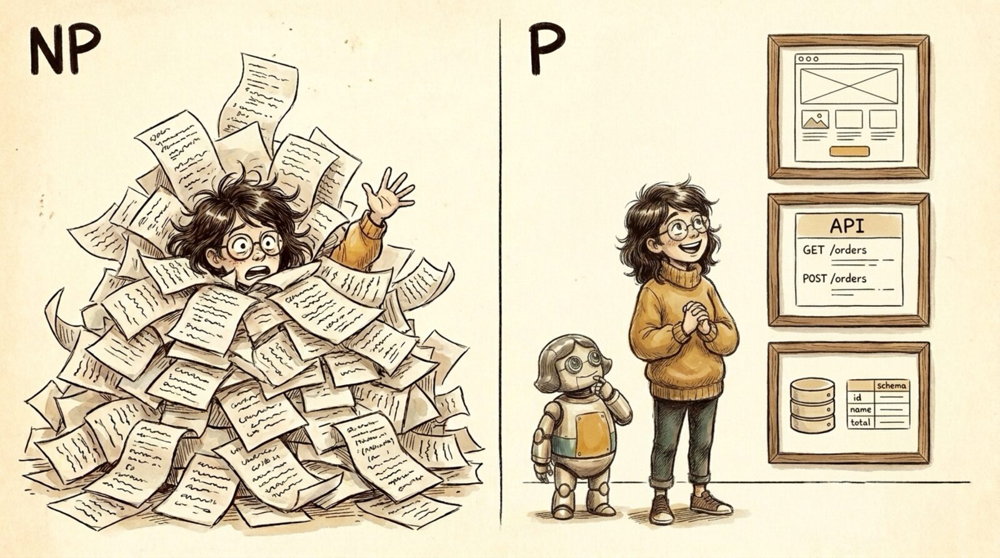

<section id="r08" data-transition="fade" style="background:#F5EEE0;color:#222222;font-family:Arial, Helvetica, sans-serif;padding:0;display:flex;flex-direction:column">

<aside>Make verification cheap -- P, not NP. Reading code is NP (drowning under the avalanche). Checking behavior is P: Maya reviews three layers, top to bottom -- the UI, the API (routes), and the database (schema).</aside>
</section>
